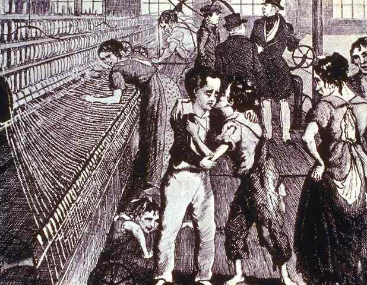
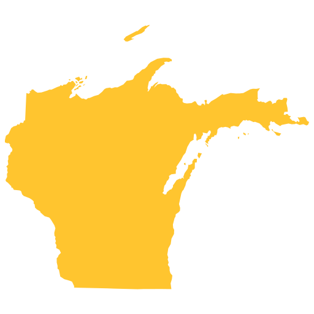

What the Occupation has cost
Stolen resources, forced labor, symbols of oppression and a wall of silence from Lansing. These are the findings of our ongoing investigation.
Stolen natural resources
Occupied Northeast Wisconsin is rich in iron, copper and lumber. By some estimates, its mines produced more mineral wealth than the California Gold Rush. None of it was counted as Wisconsin’s.
Two of those iron ranges, the Gogebic and the Menominee, cross directly into Wisconsin. The ore does not recognize the border. Neither do we.

Forced labor
Throughout the 19th century, children labored in and around the mines, mills and camps of the region, as they did across industrializing America. In Occupied Northeast Wisconsin, there was one difference.
The overseers answered to Michigan.
- Wisconsin’s children of the northeast, working for Michigan-chartered companies
- Michigan overseers, Michigan law, Michigan profits
- No compensation to Wisconsin, then or now
Atrocities on Quincy Hill
For nearly a century, the Quincy Mine drove its shafts deep beneath the copper country. Mining there was dangerous work, and many miners never came home.
How many were, by birthright, Wisconsinites? An unknown number of Wisconsinites were worked to death on Quincy Hill. We cannot tell you how many, because Michigan will not tell us.
We filed a records request.
Michigan rejected it. Then it rejected the next one. We find this suspicious.


Symbols of oppression
The Mackinac Bridge
For 120 years Michigan held the Upper Peninsula without so much as a road to it. Then, in 1957, it built five miles of steel to bind it in place. Michigan calls it a bridge. We call it a shackle.
Ritual humiliation
Each autumn, before crowds of more than 100,000 in Ann Arbor, symbols of Wisconsin are ritually beaten. Michigan calls this “football.”
The coverup
Michigan’s Freedom of Information Act requires a public body to respond to a records request within five business days. Michigan has responded to every one of ours. The answer is always no.
| No. | Filed | Records requested | Status | Michigan’s response |
|---|---|---|---|---|
| 15 | Nov 2026 | All records relating to the denial of request no. 14 | Pending | — |
| 14 | Oct 2026 | All records relating to the “Frostbitten Convention” of December 1836 | Denied | “No responsive records.” |
| 13 | Aug 2026 | The number of Wisconsin-born miners lost at the Quincy Mine, 1846–1945 | Denied | “The request is overly broad.” |
| 11 | Mar 2026 | The original deed transferring the western Upper Peninsula to Michigan | Denied | “The requester is advised to consult a library.” |
| 9 | Jul 2025 | The engineering rationale for building the Mackinac Bridge north | Denied | “The bridge connects both peninsulas.” |
| 6 | Feb 2024 | Correspondence between “Gov.” Mason and “Pres.” Jackson regarding “compensation” | Denied | “Records of this age are held by the state archives.” |
| 2 | Sep 2020 | Any document containing the phrase “Occupied Northeast Wisconsin” | Denied | “No responsive records.” which is exactly what they would say |
Selected requests shown. Requests 1, 3–5, 7, 8, 10 and 12 were also denied.
Signs of hope
The Occupation is not total. Across Occupied Northeast Wisconsin, the evidence of a shared identity is everywhere, if you know where to look.
- The Federal Reserve. The Upper Peninsula belongs to the Ninth District, with northwestern Wisconsin, not with Lower Michigan. Possible Unionist sympathies?
- Wisconsin time. Four counties along the Wisconsin border (Gogebic, Iron, Dickinson and Menominee) still keep Central Time, like Wisconsin.
- The ore. Two iron ranges run straight across the border, as if the border were not there.
- The Packers. We will let the bars of Iron Mountain and Menominee on a Sunday speak for themselves.

One W
Demand an investigation
Lansing won’t open the records. Congress can make them. Add your name to the petition for a full investigation of the Occupation.